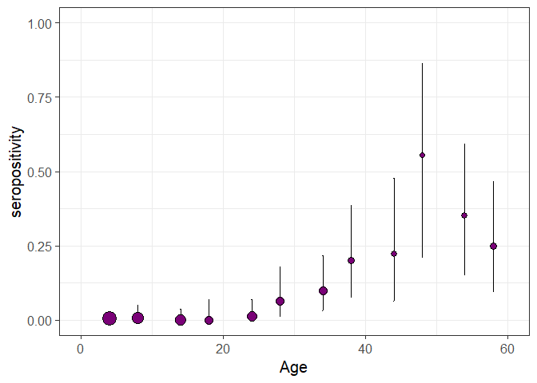

serofoi: force-of-infection from population based serosurveys with age-disaggregated data 
serofoi is an R package to estimate the Force-of-Infection (FoI) of a given pathogen from age-disaggregated population-based cross-sectional serosurveys, using a Bayesian framework. The package provides a set of features for assessing model fitting, convergence and visualisation.
serofoi relies on the rstan package, which provides an R interface for the Stan programming language for statistical Bayesian modelling. Particularly, serofoi relies on the use of a Hamiltonian Monte Carlo (HMC) algorithm implemented by Stan for Markov chain Monte Carlo (MCMC) sampling. The implemented methods are outlined in (Cucunubá et al. 2017) and (Carrera et al. 2020) (see FoI Models for further details)
serofoi is developed at Pontificia Universidad Javeriana as part of the Epiverse Initiative.
Installation
You can install the development version of serofoi from GitHub with:
if(!require("pak")) install.packages("pak")
pak::pak("epiverse-trace/serofoi")Quick start
serofoi provides a minimal serosurvey dataset, serodata, that can be used to test out the package.
# Load example dataset chagas2012 included with the package
data(chagas2012)
head(chagas2012, 5)
#> survey total counts age_min age_max tsur country test antibody
#> 1 COL-035-93 34 0 1 1 2012 COL ELISA IgG anti-T.cruzi
#> 2 COL-035-93 25 0 2 2 2012 COL ELISA IgG anti-T.cruzi
#> 3 COL-035-93 35 1 3 3 2012 COL ELISA IgG anti-T.cruzi
#> 4 COL-035-93 29 0 4 4 2012 COL ELISA IgG anti-T.cruzi
#> 5 COL-035-93 36 0 5 5 2012 COL ELISA IgG anti-T.cruziThe function prepare_serodata will prepare the entry data for the use of the modelling module; this function computes the sample size, the years of birth and the binomial confidence interval for each age group in the provided dataset. A visualisation of the prepared seroprevalence data can be obtained using the function plot_seroprev:
serodata_test <- prepare_serodata(chagas2012)
plot_seroprev(serodata_test, size_text = 15)
Contributions
Contributors to the project include:
Zulma M. Cucunubá (author, maintainer)
Nicolás Torres (author)
Benjamin Lambert (author)
Pierre Nouvellet (author)
Geraldine Gómez (contributor)
Hugo Gruson (contributor)
David Santiago Quevedo (contributor)
Jaime A. Pavlich-Mariscal (contributor)
Package vignettes
More details on how to use serofoi can be found in the online documentation as package vignettes, under Get Started, An Introduction to FoI Models and Real-life Use Cases for serofoi
Help
To report a bug please open an issue.
Contribute
Contributions to serofoi are welcomed. Please follow the package contributing guide.
Code of conduct
Please note that the serofoi project is released with a Contributor Code of Conduct. By contributing to this project, you agree to abide by its terms.